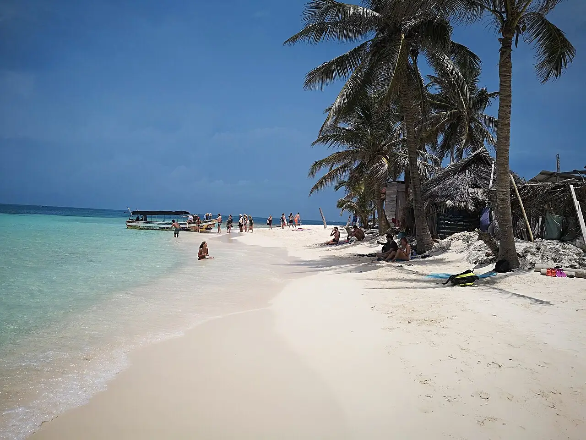

Guna Yala — Cayos Chichimé
Guna Yala, Panama · snorkeling, baignade, kayak

Archipel de centaines d’îlots de sable et de cocotiers sur la côte caraïbe du Panama, en territoire autonome guna (autrefois appelé San Blas). Les cayes de Chichimé, parmi les plus visitées, offrent eau turquoise et récifs peu profonds.
- Lieu
- Guna Yala, Panama
- Niveau
- Débutant
- Activités
- snorkeling, baignade, kayak
- Type d'eau
- Mer / océan
- Coordonnées
- 9.59, -78.88 (position approximative du secteur)
Dangers à connaître
- Récifs peu profonds et coraux coupants : nage sans toucher le fond.
- Passages de bateaux à moteur entre les îles : reste visible et près du rivage.
Le conseil d'Ocean Buddy
Réserve ton séjour auprès d’opérateurs guna et respecte les règles et les taxes fixées par les communautés.
Ouvrir dans Ocean Buddy Télécharger sur l'App Store
Source : Fiche Ocean Buddy · septembre 2026 · à vérifier localement.